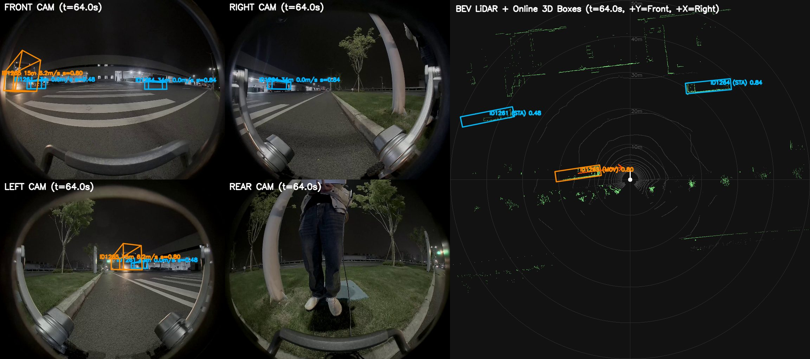
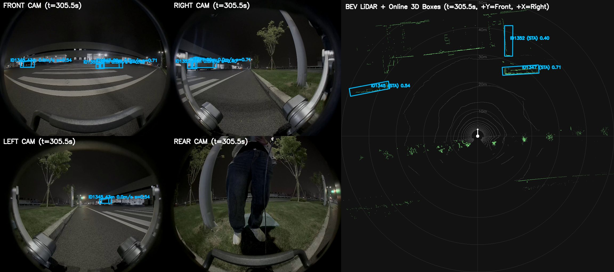
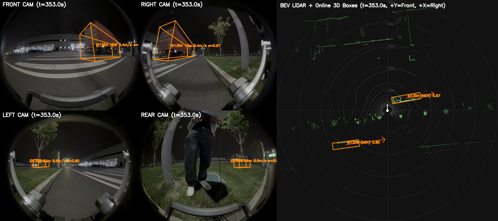
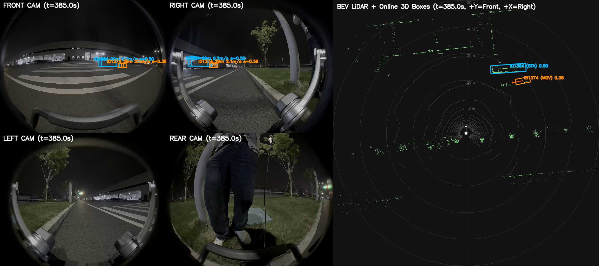
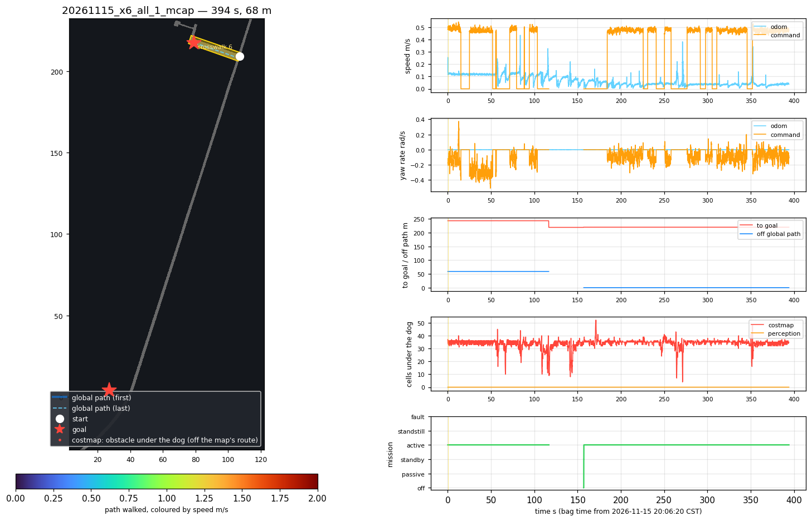

时长 394.1 s (20:06:20–20:12:54)，狗全程静止站在 6 号人行横道东侧入口线内侧 0.3–7.2 cm 处 (位移 0.24 m，影子模式开启，RTK 100% 固定解)。共采集激光雷达 3,941 帧 (10.0 Hz，0 丢帧)、四路环视鱼眼各 9,851 帧、规划周期 7,881 次 (20.0 Hz)。
passed_ 死区使最后 42 s 门控旁路（现已修复并通过闭环单测）。20261115_x6_all_1.mcap 与防闪烁精排包 20261115_x6_planning_viz.mcap 生成至 /public/robot/，配合 Nav_D20/planning/script/planning_live.json 与 planning_viz.json 即可直接查看。




| 指标项 | 实测数值 | 设计预期 | 结论 |
|---|---|---|---|
| 激光与目标帧率 | 3,941 帧 / 394.1 s (10.00 Hz, max dt 101.5 ms) | 10 Hz 稳定 | 零丢帧 (skipped=0) |
| 单帧总耗时 total_ms | p50 = 26.5 ms · p90 = 32.5 ms · p99 = 39.7 ms | < 50 ms | 实时裕量充足 |
| 阶段耗时拆分 (p50) | 预处理 10.9 ms + TRT GPU 13.2 ms + 后处理 2.0 ms + 跟踪 0.1 ms | Orin FP16 | 推理极稳 |
| 候选框过滤比 | 底层候选 31.5 个/帧 (>=0.2) -> 确认航迹 2.0 条/帧 (>=0.4, min_hits=3) | 抑制地面灌木噪点 | 滤除 ~93% 低分噪点 |
| ID | 时间窗 | 持续(帧) | 类别判定 | 检测系坐标 (m) | 距离 | 尺寸 LxWxH | 峰值速度 | 均分 | 现象与对规划影响 |
|---|
| 阶段 | 时间段 | 状态机 | 路径几何 | 联动表现与根因 | 结论 |
|---|---|---|---|---|---|
| 阶段 1 | 0.0 - 116.7 s | cross <-> cross_wait | exit = 2.2 m | 狗静止站在 6 号横道东端内部，5 辆横穿车均准确触发 cross_wait (ahead) | 让车正常 |
| 阶段 2 | 116.7 - 157.0 s | Idle / off | 点第一次目标 | 首次发 /goal_pose 先停止旧 Tracking 任务切回 Idle，无指令输出 | 符合交互设计 |
| 阶段 3 | 157.0 - 184.2 s | wait -> go | exit = 27.7 m | 第二次发目标 (base_link 27.0,4.0 -> map 80.72,216.44)，压线 6cm 等 1304/1311 等通过后于 184.24s 放行 | 门控正常 |
| 阶段 4 | 184.3 - 352.0 s | cross <-> cross_wait | 查 28.7 m 路径 | 真车 1327/1333/1338/1354 均正确让行；但 30–46 m 远端瞬态假框命中 young+lost 导致 3 次 5–6s 空等 | 远端闪框空等 |
| 阶段 5 | 352.0 - 394.1 s | none (unreleased=1) | crosswalk -1 | 定位微抖几厘米出界 3 帧再抖回界内 7mm，旧逻辑因 passed_.count(0) 跳过横道锁死在 none（已在 crosswalk_yield.cc 修复） | 已定位并修复 |

| Layout 路径 (相对 d20car_predict/CenterPoint/) | 适用数据文件 | 说明 |
|---|---|---|
Nav_D20/planning/script/planning_live.json | /public/robot/20261115_x6_all_1.mcap (或原始 .db3) | 首选实时/原始复盘布局：含 /planning/debug/crosswalk 3D 车框、栅格、影子速度曲线、感知对象表；点 Add Panel -> Image 即可并排看四路鱼眼 |
Nav_D20/planning/script/planning_viz.json | /public/robot/20261115_x6_planning_viz.mcap | 41 MB 防闪烁精排复盘布局：带完整站点路网、编号斑马线与 /viz/events 结构化事件流 |
mkdir -p /public/robot
rm -rf /public/robot/20261115_x6_all_1_mcap \
/public/robot/20261115_x6_all_1.mcap \
/public/robot/20261115_x6_planning_viz.mcap \
/public/robot/20261115_x6_planning_viz.png
/home/engineers/junyongmou/robot/ultralytics/.venv/bin/python \
d20car_predict/CenterPoint/Nav_D20/planning/tools/bag_to_mcap.py \
/public/zjst/robot/cp_data/20261116_dog/20261115_x6_all_1 \
-o /public/robot/20261115_x6_all_1_mcap && \
ln -sfn /public/robot/20261115_x6_all_1_mcap/20261115_x6_all_1_mcap.mcap \
/public/robot/20261115_x6_all_1.mcap
MPLCONFIGDIR=/tmp /home/engineers/junyongmou/robot/ultralytics/.venv/bin/python \
d20car_predict/CenterPoint/Nav_D20/planning/tools/planning_mcap_viz.py \
/public/robot/20261115_x6_all_1_mcap \
--map d20car_predict/CenterPoint/Nav_D20/map/ad68517c-e845-42a4-b5dd-a6b7c6d2af13.zip \
-o /public/robot/20261115_x6_planning_viz.mcap